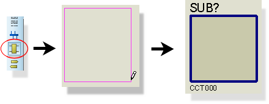
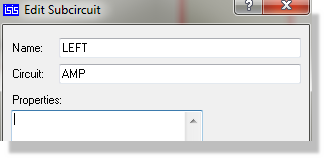
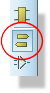
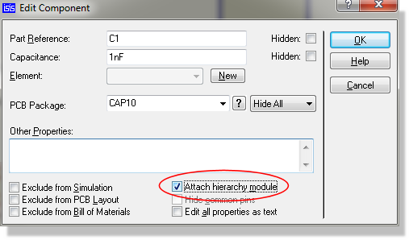
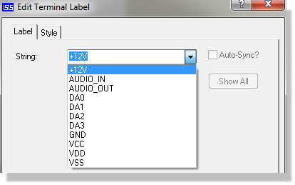
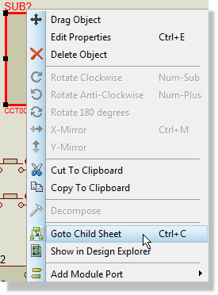
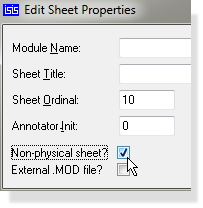

HIERARCHICAL DESIGNS
Introduction
A hierarchical design is one which consists of two or more levels of sheets. The highest level is likely to be a block diagram showing the structure of the overall system and each block will have a sub-sheet with a section of the design on it. Depending on the complexity of the design, these sub-sheets may themselves contain further black boxes or modules; Proteus sets no limit on the hierarchy depth although you are doing something very odd if you need more than half a dozen levels.
A second use for hierarchy concerns the replication of a part of a design - a simple example would be a stereo amplifier which has two mono channels and a common power supply. There is nothing to stop you simply drawing one channel, exporting it as a SEC file and then importing it to a second sheet. However, should you then wish to alter the mono circuit - even if it is only a cosmetic change - you are going to have to alter both channels. Where more than two copies of a circuit are involved this can mean serious hassle. With a hierarchical approach you have two modules labelled LEFT and RIGHT but each one is associated with the same circuit data. Naturally you still need different references for the same component in each instance of the mono amplifier and this is catered for by means of Design Global Annotation.
In Proteus, hierarchy also facilitates the creation and use of Parameterized Circuits, and is of considerable use when developing simulator models for VSM. The former subject is covered at length in Parameterized Circuits whilst the latter is dealt with in the VSM manual.
See Also:
Multi-Sheet Designs :Some Practical Examples.
Terminology
Before we delve any further into what is quite an abstract concept, we need to define some terminology...
Circuit
A circuit is a collection of components, other objects and the associated wiring in the general case. For example we can talk about the mono amplifier circuit.
Sheet
A sheet is an instance of a circuit and has a unique set of annotation data that gets mapped onto the components in the circuit. Where a sheet is attached to a module in the next level up - the parent sheet - we can call it a sub-sheet or child sheet. Therefore, we can say that the left and right channels of our amplifier are drawn on the left and right sub-sheets. The sheets at the top level of the design are called the root sheets.
Module
A module is an object which has an associated sub-sheet. There are two types of module: sub-circuits and module-components.
Sheet Property
A sheet property is a property assignment that is attached to a particular sheet, and is available for use in property expressions for any of the objects on the sheet. In hierarchical design, any user properties of the parent module become sheet properties for the child sheet.
Parameterized Circuit
A parameterized circuit is one in which one or more component values or other object properties is given as property expression involving one or more sheet properties. Since these sheet properties can be specified on the parent module (be it a sub-circuit or a module-component), it follows that the circuit itself can have different component or property values from one instance to another. Typical applications for this are filter circuits in which some resistor and capacitor values are different for each instance.
Sub-Circuits
Editing a sub-circuit in the usual way allows you to enter a reference, circuit name and possibly some user properties which become sheet properties on the child sheet. The reference would be LEFT or RIGHT in our amplifier example and the circuit name could be AMP.
Connections between the parent sheet and the sub-sheet are made by means of like named module ports on the left and right edges of the sub-circuit, and terminals on the child sheet.
Sub-circuits are most useful in cases where the exact interface between parent and child sheets is not clear at the outset - you can easily add and remove ports and terminals.
To set up a hierarchy with a sub-circuit:
- Select the Sub-Circuit icon left click the left mouse button and then drag out a box for the sub-circuit body, clicking the left mouse button again to place

- From the Object Selector, select and place the appropriate types of module port on the left and right edges of the sub-circuit body. You will need one port for each interconnection between the parent and child sheets. By convention, one generally puts inputs on the left and outputs on the right.

- Either directly, or using the Property Assignment Tool, assign names to the module ports. These names must correspond with the Logical Terminals that you will place on the child sheet.
- Edit the sub-circuit itself and give it an instance name (e.g. LEFT) and a circuit name (e.g. AMP). Several sub-circuits may share the same circuit name, but on a given sheet, each should have a unique instance name.

- Either launch the design explorer or point at the sub-circuit and key the shortcut for ‘Zoom to Child’ (see Keyboard Mapping for details). This will load the child sheet in the schematic. Unless you have specified the name of a circuit that already exists, you should now see a blank drawing.
- Select the Terminal icon and place terminals to correspond with the module ports on the sub-circuit.

- Again, either directly or with the Property Assignment Tool, annotate them to have corresponding name which correspond with the module ports. A netlist compiler warning is generate for any module port which is not matched by a terminal.
- Draw the circuitry for the child sheet, connecting it where appropriate to the terminals.
Circuitry inside the sub-circuit will 'connect' to the parent sheet through the sub-circuit ports. The convention is that a terminal inside a sub-circuit with the same name as a module port pin on the sub-circuit connects to it. We advise therefore giving some thought to naming.
Module Components
Any ordinary component can be made into a module by setting the Attach Hierarchy Module checkbox on the Edit Component dialogue form. The component's value is taken to be the name for the associated circuit, and the component's reference serves as the instance name.

Tick the box encircled to attached a Hierarchical Module
Connection between parent and child is achieved by having terminals on the child that correspond with the pin names of the parent module-component. This works for hidden power pins too, although this is irrelevant if the Global Power Nets option on the Edit Design Properties command is selected.
Module-components are most suited to handling components which need to be expanded in some way for simulation, but kept as a component for PCB design. The Depth control on the Netlist Generator command form (Depth) provides the means to select what will happen.
To set up a hierarchy within a module component
- Select and place the component itself in the ordinary way.
- Bring up the component's Edit Component Dialogue form (left click twice on the component or right click and select edit properties from the resulting context menu) and set the Attach Hierarchy Module checkbox. Also ensure that the component's reference and value are suitable as an instance name and a circuit name respectively. In general, the module component will be an IC of some sort, and so its value will make sense as the name of an attached circuit.
- Point at the sub-circuit and either launch the design explorer to navigate to the subsheet or key the shortcut for ‘Zoom to Child’ (see Keyboard Mapping for details). This will load the child sheet into the schematic editing window. Unless you have specified the name of a circuit that already exists, you should now see a blank drawing.
- Select the Terminal icon and place terminals to correspond with the pins of the parent component.
- Either directly or with the Property Assignment Tool, annotate the terminals to have corresponding name which correspond with the component's pins. If you are working directly from the Edit Terminal Dialogue form, the names of existing pins are shown in a a drop down combo box for convenience. If you are using the PAT and the pin name is unknown and not drawn on the screen, the name of pin may be established by pointing at its end and applying the keyboard shortcut for ‘Edit Component Under Mouse’ (by default this is CTRL+'E') A netlist compiler warning is generated for any pin which is not matched by a terminal.

- Draw the circuitry for the child sheet, connecting it where appropriate to the terminals.
External Modules
Having created a module-component and its child sheet, it is possible to store the child circuit externally to the design such that it can be re-used in other designs. Furthermore, you can modify the library part for the parent component such that newly placed instances automatically bind to the child module.
To set up an external module and an associated library part:
- Set up a hierarchy with a module component as described in the previous section.
- Zoom to the child sheet, invoke the Edit Sheet Properties command, and click the External .MOD File checkbox. This will create a MOD file with the same name as the library part associated with the parent component.
In the first instance, this file will be created in the same directory as the design file. - Return to the parent sheet, tag the parent component and invoke the Make Device command.
- Enter the name of the module file in the External Module field.
- Click Next until you come to the Library Selector page, then click Ok to store the device back into its library.
Newly placed instances of the device will then attach automatically to the MOD file.
Moving About a Hierarchical Design
There are several ways to move about the hierarchy:
- Use the Design Explorer. This provides a 'windows explorer style' user interface to the schematic and allows you to navigate through sheets as well as to both components and nets.
- Using the Goto Sheet Command on the Design Menu.
- The Previous Sheet, Next Sheet and Exit to Parent commands allow you to move through the sheet hierarchy. Additionally, you can right click on a parent sheet and select the 'Goto Child Sheet' command from the resulting context menu as shown below.

Goto Child Sheet on the context menu
If you zoom into a module which has not yet been given a circuit name, a new internal one will be chosen automatically. You can edit the circuit name later, but this will detach the old circuit from the module rather than re-naming the circuit. Any circuits that have been orphaned in this way remain in the design file, but can be removed using the Tidy command on the Edit menu.
Design Global Annotation
Where several sub-circuit objects share one circuit name, you will find that editing done through one of them is reflected in them all. It follows from this that you need only draw out each circuit type once. However, each instance has its own set of component references for the objects in the circuit. This is, of course, essential for PCB design where each instance will require separate physical components to make it. The automatic annotator handles this Design Global Annotation seamlessly, and you need only be aware that changing a component reference on one sub-sheet does not affect the references on other instances of the circuit. It is possible to disable this feature for specialist applications - see Non Physical Sheets below
Non-Physical Sheets
In some applications where there are multiple instances of a circuit it is preferable for all instances to carry the same annotation. If a flat netlist is produced the equivalent parts in each instance must be distinguished and this is achieved by means of Non Physical Sheets. In our amplifier example, the first IC in each channel would LEFT_U1 and RIGHT_U1 - these names being produced by concatenating the Sheet Name (not the sheet title) of the parent module, an underscore and the part reference.
A Non Physical Sheet is selected via the Edit Sheet Properties command, having first loaded the relevant sheet. Set the Non-Physical Sheet checkbox if you wish the naming of components to be local on a particular sheet.

Tick the Non-physical Sheet box
This functionality is unlikely to be useful where a PCB design is the end result but in can be useful in simulation work, or where a module represents a daughter card.
Net names on sub-sheets are always prefixed in this way, unless they are power nets and the Global Power Nets option of the Edit Design Properties command is selected. The result of this is that net names on sub-sheets are 'local'; this is more or less essential where several instances of the same circuit are used.